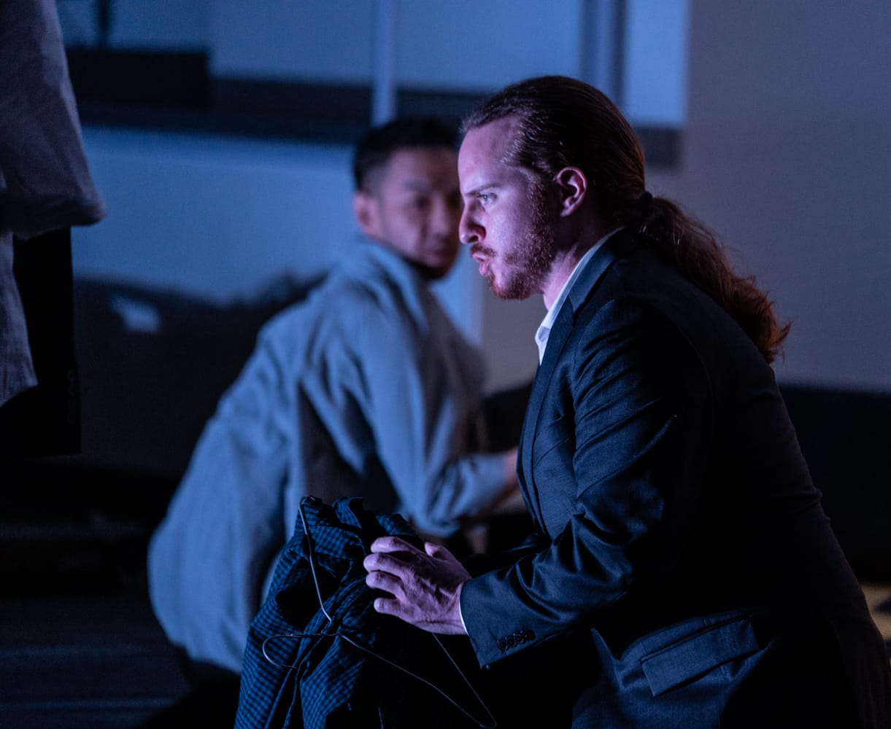
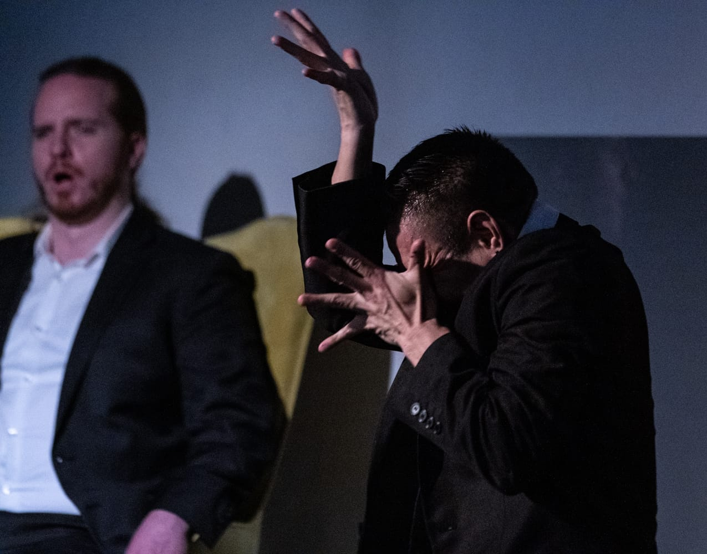
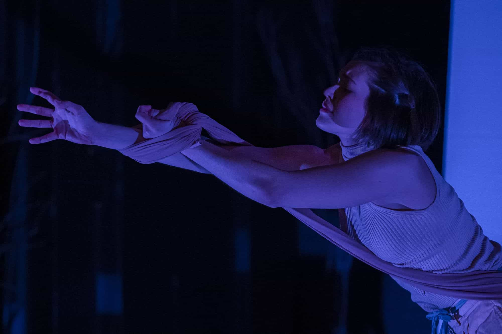
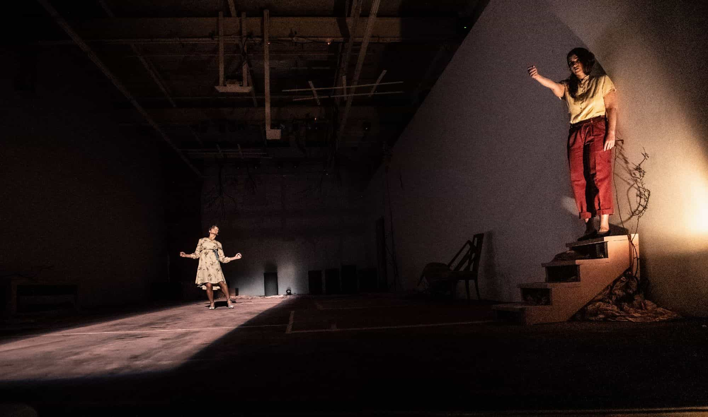
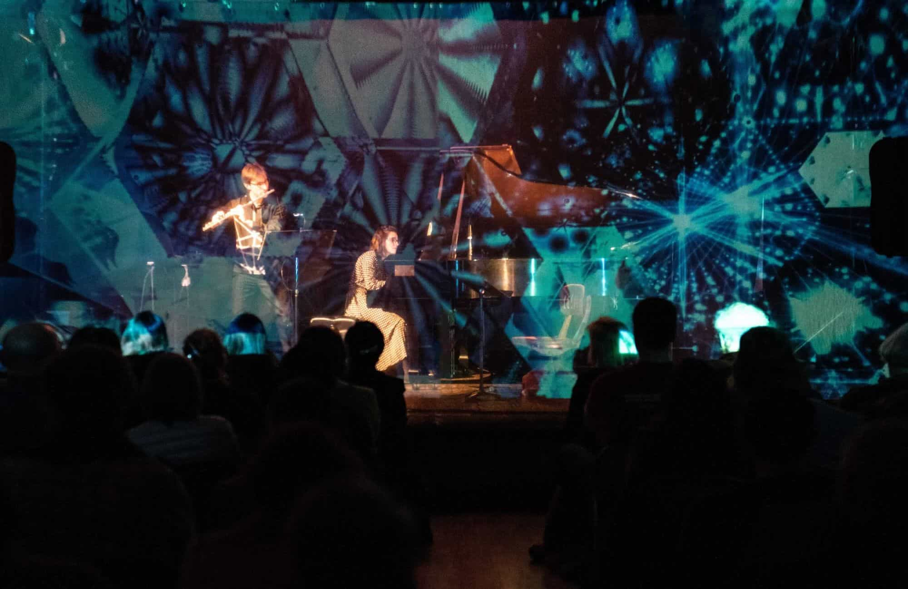
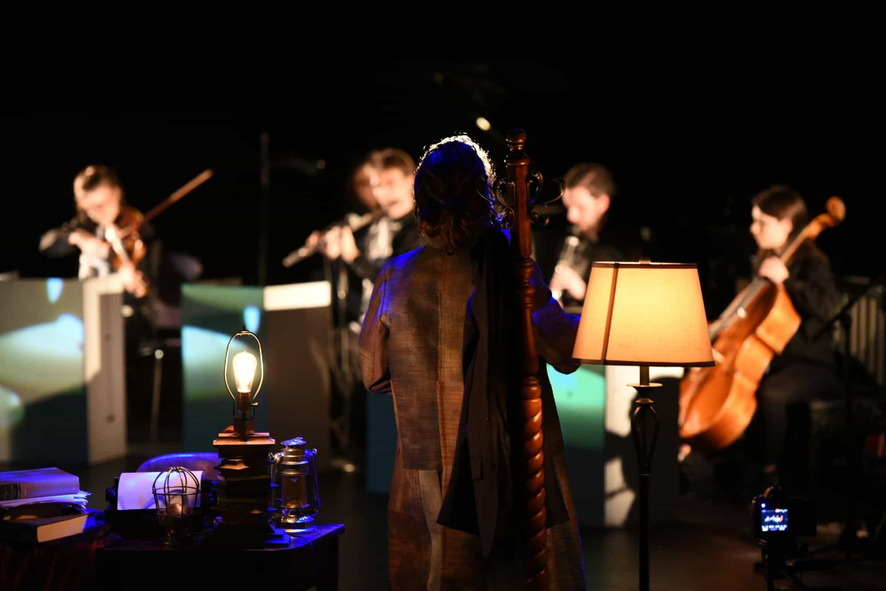
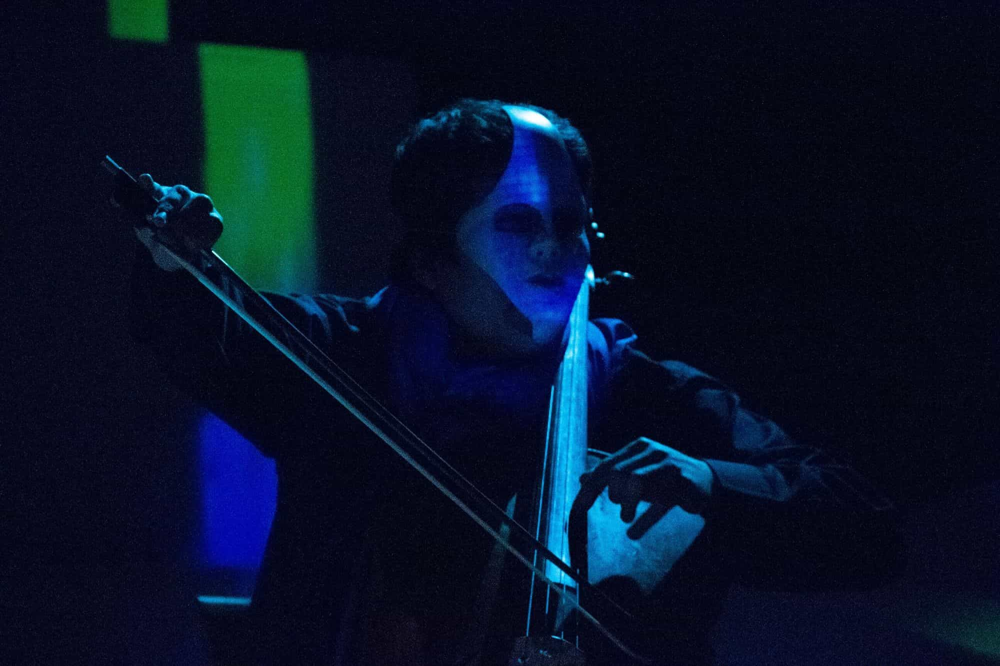
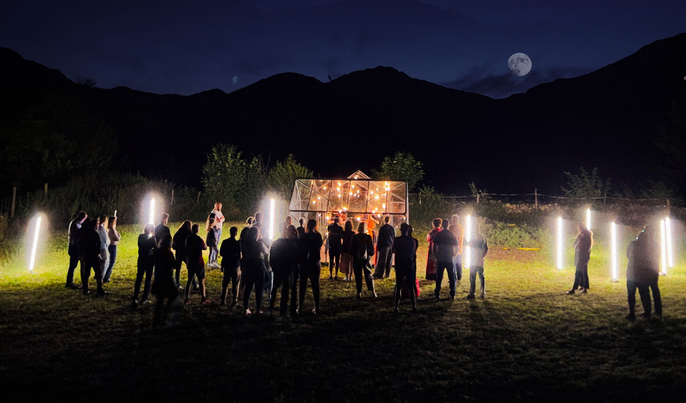
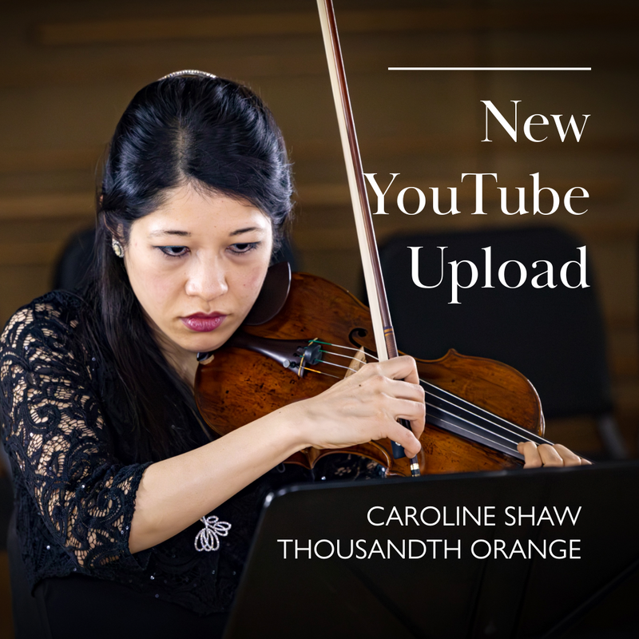

Seven works
Seven works, twenty years.
Each CreArtBox production is built around the form we call a visual concert: live music staged in dialogue with projection, light, and design. Some are operas. Some are multimedia chamber works. They all come from the same studio.
What a visual concert is.
Visual art and theatrical design techniques are used to enhance the audience's listening experience of live classical and contemporary music while respecting the original musical composition.
These multimedia performances are often presented in medium-size venues that allow the audience to be fully immersed in the atmosphere created by lights, projections, and stage design.
CreArtBox works with visual artists, designers, dancers, and other creative minds to craft multi-layered performances centered around classical music — collaborating with musicians from the Metropolitan Opera Orchestra, the New York Philharmonic, the BBC Orchestra, and the Chamber Music Society of Lincoln Center.
Opera · ballet · film
Architecture of a Common Man
2023
An opera-ballet-film that follows the journey of a world-recognized photographer working on a documentary about his own life.
While creating this documentary, he unveils a fascinating retrospective of his life — analyzing his relationship with work, family, health, and spirituality. Eventually discovering parts of himself buried in his professional ambitions. The main character is split into three performers: an actor on screen plus two alter egos on stage — a contemporary dancer and an opera baritone. The music is originally written for soprano, baritone, string quartet, piano, synthesizer, and choir.
| Written & directed by | Guillermo Laporta |
| Conductor | Jason Thomas Aylward |
| Soloists | Baritone · Bryan Murray Soprano · Rebecca Madeira |
| Dancer/choreographer | Peter Cheng |
| Venues | Culture Lab · NYC (2023) |


Opera-ballet
Two Roads
2019 / 2020An opera-ballet that materializes the inner thoughts of Elle, scrutinizing the choices she made — an apocryphal attempt to write a letter to a future self.
Elle's character is constructed by overlapping a conglomeration of performers fluctuating in time and space. The work is framed as an opera, but the set, the choreography, and the light and sound design are written into the libretto, following a parallel creative process.
| Cast & creative | Dancers · Mary Taylor Hennings, Can Wang Soprano · Ariadne Greif Baritone · Nathaniel Sullivan Actress · Julie Berndt Piano · Josefina Urraca |
| Venues | The Tank Theater · New York (2020) Plaxall Gallery · NYC (2019) |


Multimedia chamber work
AWAVE
2019
A multimedia concert experience for flute, piano, video, and electronics — a creation by Guillermo Laporta.
Premiered at the Ryogoku Concert Hall in Japan as the second collaboration with costume and set designer Mizuko Kaji. New York presentation at the Bay Ridge Concert Series. CD released the same year, recorded at Oktaven Audio Studio.
| Cast & creative | Flute · Guillermo Laporta Piano · Josefina Urraca Set & costume · Mizuko Kaji |
| Venues | Ryogoku Concert Hall · Tokyo (2019) Bay Ridge Concert Series · NYC (2019) |
Music & theatre
Visuality
2014 – 2016A narrative inspired by studies by Sigmund Freud and Carl Rogers — a psychoanalyst exploring the deepest chambers of his mind through music, poetry, and observation.
Written by Guillermo Laporta and Jacopo Rampini, choreographed by Marissa Maislen. Fuses music by Sebastian Currier, Joshua Penman, Debussy, Paul Moravec, Jacob TV, Joan Tower, Marcos Fernández, and Frederic Rzewski. Dr. Reyn's inner mind is reflected in a commutable set — cubes surround the scene, the musicians, and the audience, using video-mapping to bring the world to life.
| Cast & creative | Writers · Laporta & Rampini Costume · Mizuko Kaji Light · Jane Fox Projection & set · Guillermo Laporta Choreography · Marissa Maislen |
| Venues | Queens Theatre · December 2016 CSV Center · May 2015 The Tank Theater · March 2015 Artisphere · D.C., November 2014 |

Multimedia opera
Noctum
2011
A multimedia opera for chamber ensemble, physical actor, aerialist, and soprano. The earliest lunar eclipses observed by humans gave rise to hundreds of stories — in this production, the nightmare is revealed for the first time in the world of dreams.
Érebo, a dark creature wandering among the shadows, watches Elhüa, goddess of the night, place the moon in the sky to unfold the dreams of the living. Disturbed by his curiosity, Érebo ascends to the human world and decides to steal the moon — eventually breaking it into thousands of pieces and emboldening the world of nightmares.
Musical
London the Show
2009An early multidisciplinary work — part of the lineage that ultimately became CreArtBox in New York.
Produced under the original Cre.Art Project banner. The piece marked the moment when the project began to consciously combine narrative, music, and design. Various venues across Europe, 2009.
Multidisciplinary debut
Cre.Art Project
2006The first work. The founding project that gave the organization its first name and shape.
Conceived in Europe by Guillermo Laporta and clarinetist and performance creator Tagore Gonzalez. The piece was the seed of the organization that would, seven years later, be re-established in New York as CreArtBox.

Festival ADAR.
Since 2021, CreArtBox co-produces Festival ADAR, an international arts festival held in Asturias, Spain, dedicated to revitalizing rural communities through music, contemporary creation, artist residencies, and site-specific projects. The 5th edition runs August 3–16, 2026.
Founded as The Association for the Arts Development in Rural Areas of Spain. The festival has received recognition from Spanish national and regional television, including Telecinco and Asturias Public Television.
Visit festivaladar.com →play.creartbox.nyc
Our classical music streaming platform. Visual concerts, rehearsals, interviews with composers and visual artists, behind-the-scenes from production work in New York and Asturias. Featured composers include Brittney Benton, Alex Burtzos, Oliver Caplan, Devin Cholodenko, Gilad Cohen, Eric Moe, Paul Novak, Sam Wu, Eli Tausen á Lava, Zygmund de Somogyi, and more.
Watch on play.creartbox.nyc →